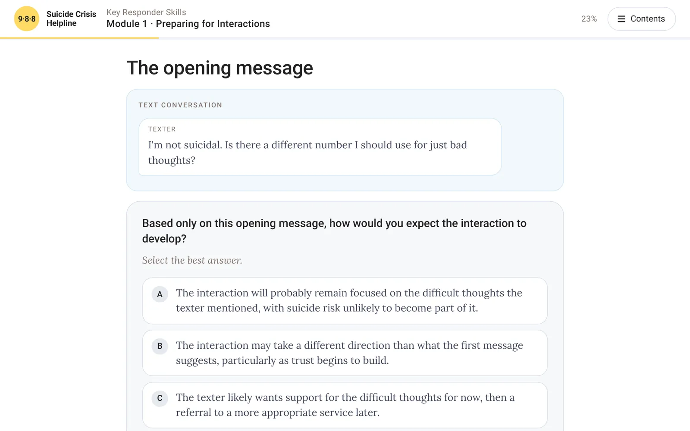
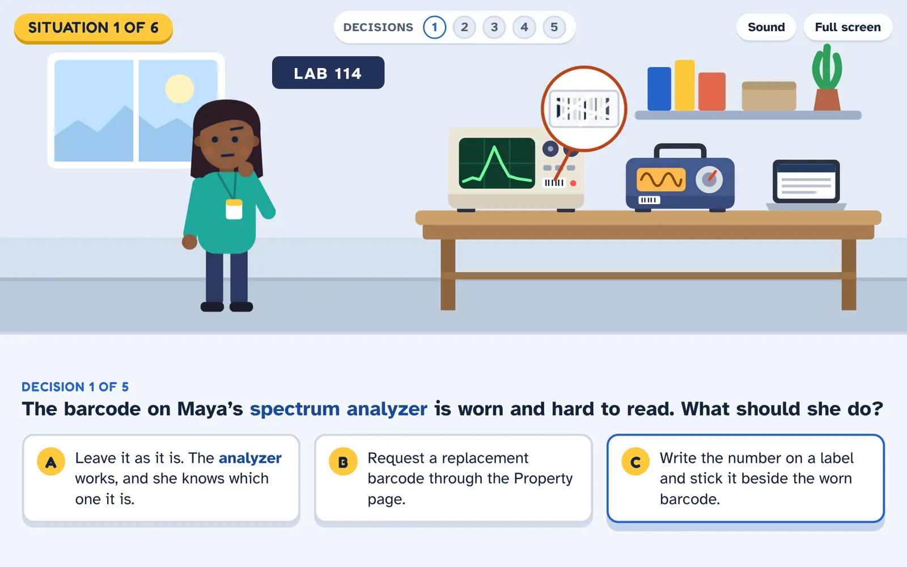
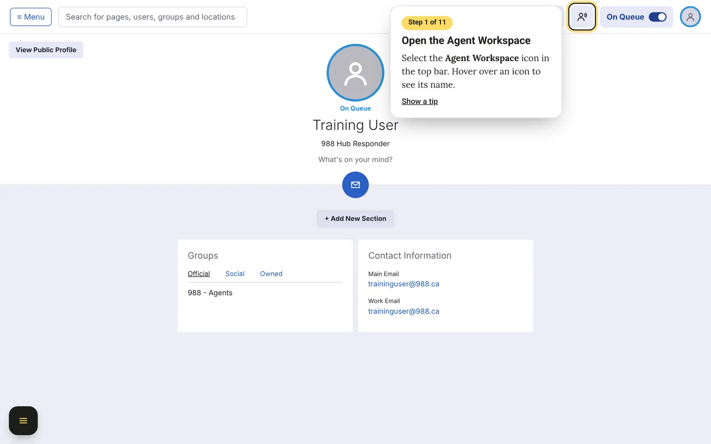
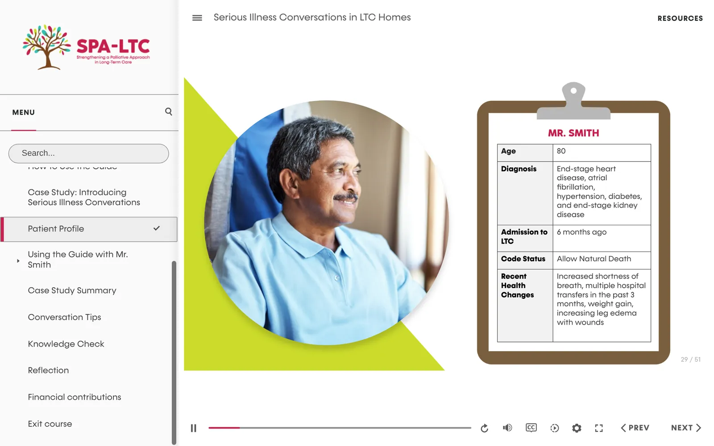
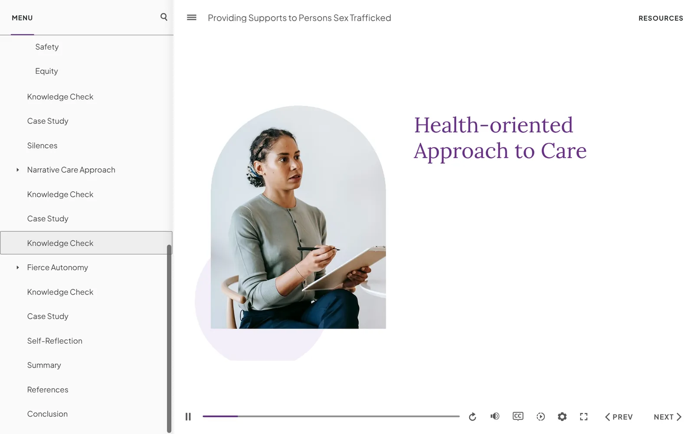

Software simulation for a commercial spending card platform
I rebuilt a narrated screen recording as a simulation where administrators can practise the tasks themselves.
I’m a learning experience designer with almost 15 years of experience in healthcare, higher education and freelance e-learning. Here are some of the courses, simulations, and scenarios I’ve designed and built recently.
I rebuilt a narrated screen recording as a simulation where administrators can practise the tasks themselves.

In this seven-module, self-paced course, responders practise text and phone interactions before they work with the public.

I built five self-paced courses for one industry association, with custom interactive diagrams, code blocks, and scenarios in Rise.

I turned a guide on inclusive practice into an online course and added branching scenarios where each choice changes what happens next.

This concept demo allows players to make decisions that help them learn the responsibilities of a government property custodian.

I produced 12 narrated video tutorials for a contact centre phone system. So far, I’ve rebuilt three as practice simulations.

A narrated Storyline course for staff in long-term care homes, focusing on the palliative approach to care.

A narrated Storyline course for social service and mental health providers. Recently redesigned to include updated visuals and newer AI voices.
I’ve spent almost 15 years designing and building learning experiences in healthcare, higher education and freelance environments. I have an MEd in Adult Education and also spent a few years working as a high school technology teacher.
I currently work as an instructional designer at a mental health hospital, and I still take on freelance projects in my spare time alongside that role.
I use AI to help process large volumes of information and perform the tedious parts of learning design work. So far, I’ve found that this gives me more time for decisions that need my judgement as an instructional designer.
I also use it to improve existing learning, for example by quickly turning a narrated screen recording into a simulation people can practise in. And it helps me build custom branching scenarios and other high-fidelity interactions that used to be impractical on a typical budget or timeline.